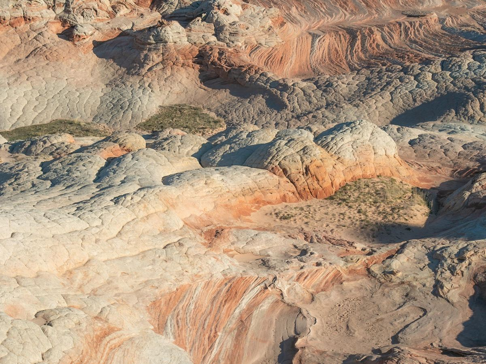
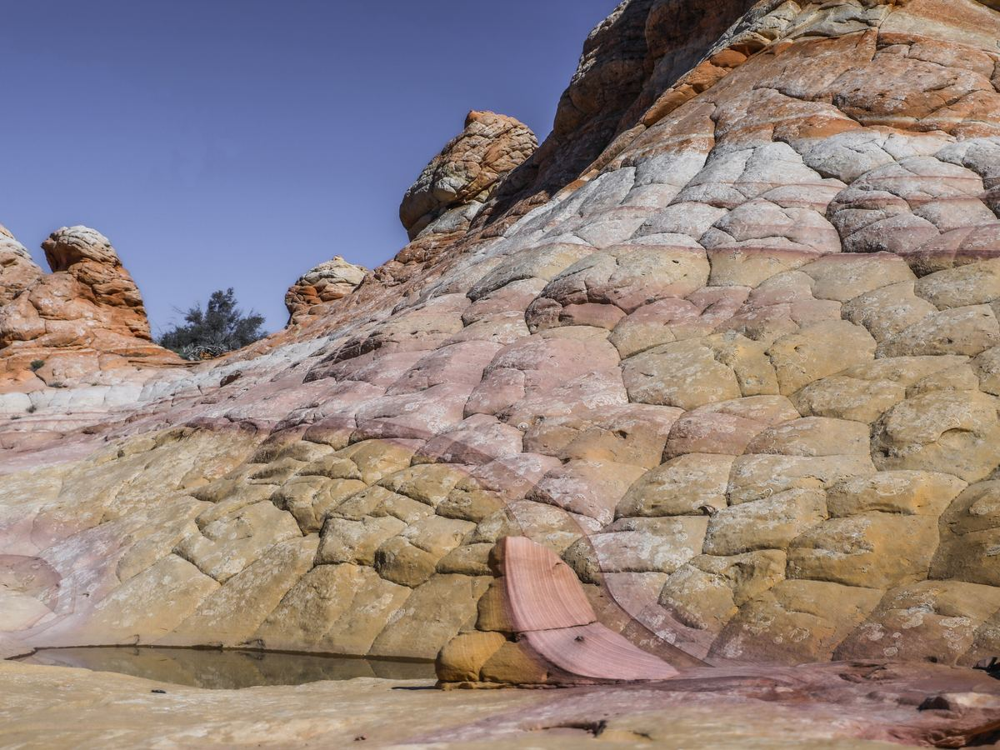
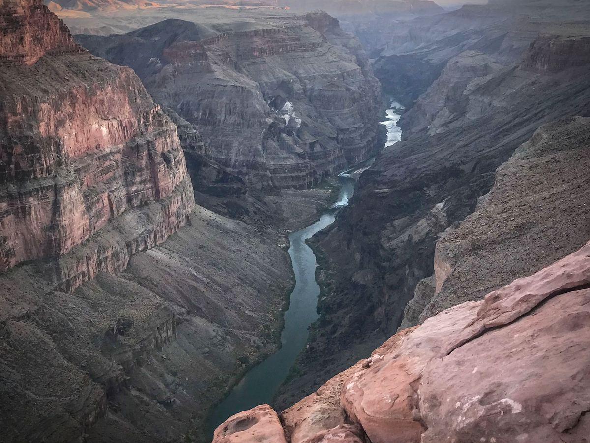

Why the Wave is so hard to get
Only 64 people a day may hike to the Wave. 48 of those permits go out in a lottery three to four months ahead, and 16 in a daily lottery two days ahead. In the daily lottery, the odds usually run under 10%.
No tour company can sell or guarantee a Wave permit. We apply through the same lotteries as everyone else, and our odds are no better than yours. So here is what we would do with that day instead.

No permit needed
White Pocket
White Pocket sits about six miles from the Wave and is cut from the same Navajo Sandstone: swirls, stripes and white brain rock, in a formation much bigger than the Wave itself. On most days only a handful of cars are at the trailhead. If it were anywhere else, it would be its own national park.
No permit means you can go without us, if you have a high-clearance four-wheel drive and know deep sand. We rarely bring guests out who later say they would have been comfortable driving those roads themselves.
- Permit
- None needed
- The day
- 9 hours, leaving Kanab at 8am
- Hiking
- Short and flexible, on uneven sandstone. Difficulty 3 of 10.
- Price
- 2026: adults from $229, kids 14 and under $199. 2027: adults from $239.

Easier than the Wave, not a given
South Coyote Buttes
South Coyote Buttes is the Wave's quieter neighbor, just to the south. Cottonwood Cove packs teepees, fins and tightly striped sandstone into a few miles of wandering, and only 20 permit holders a day are allowed in. On most trips we don't see another person. It is our guides' favorite.
- Permit
- Required. It is easier to win than a Wave permit, but still not a given, and hard in the busy season. We enter the lottery for you. If it misses, your tour goes to White Pocket or the Sandstone Teepees instead.
- The day
- 10 hours, leaving Kanab at 8am (6am in the hotter months)
- Hiking
- About 6 miles on sand and sandstone. Difficulty 7 of 10. Not recommended for small children.
- Price
- $249 per person

No lottery at all
Toroweap
Toroweap is a different kind of jaw-drop. It is the sheerest viewpoint in Grand Canyon National Park: 3,000 feet straight down to the Colorado River, with no railings, no pavement and no buses. It sits 61 miles from the nearest paved road, and on the busiest day of the year you might see 20 people.
- Permit
- No lottery, and nothing for you to arrange
- The day
- 8 hours, leaving Kanab at 9am. We run it year-round.
- Hiking
- Half a mile to a mile, and optional: we drive to within 100 yards of the rim. Likely our easiest tour.
- Price
- $249 per person
Still want a shot at the Wave?
Book a Wave Conditional Tour and we enter the daily lotteries for you. Your tour runs either way, and we tell you where you are headed the day before.
- The WaveIf we win the daily Wave lottery.
- South Coyote ButtesIf the Wave misses and we win this lottery instead.
- White PocketIf both lotteries miss. White Pocket needs no permit.
From $249 per person. Our odds are the same as anyone's, so a win is never guaranteed.
How the Wave Conditional Tour works
Want to keep applying on your own? Our permit guide walks through both lotteries.
“White Pocket is not just a Wave consolation prize but a uniquely beautiful first choice option.”
Good to know
- Every tour starts in Kanab, Utah. We pick up at Kanab hotels, vacation rentals and RV parks.
- We do not pick up in Page, Arizona. For White Pocket and South Coyote Buttes we can meet you at House Rock Valley Road, about 45 minutes west of Page.
- Groups are small: five or six guests per vehicle.
- Want the day to yourselves? All three tours can be booked as private tours.
- Water and snacks come with every tour.
- Prices are per person, before sales tax and land-agency fees.
- Traveling solo? Join a departure that already has guests and you pay the normal per-person price.
Can a tour company get me a Wave permit?
A tour company can try for you, and that is all any company can do. On a Wave Conditional Tour we enter the daily lottery on your behalf. Tour companies apply through the same lottery as everyone else, so our odds are no better than yours. Nobody can sell you a guaranteed permit for the date you want.
Do I need a permit for White Pocket?
No. White Pocket needs no permit. The hard part is the road: unmaintained deep sand that calls for a high-clearance four-wheel-drive vehicle and a driver who knows sand.
Which of the three is the easiest day?
Toroweap. We drive to within 100 yards of the rim, and most guests walk half a mile to a mile. White Pocket comes next. South Coyote Buttes is the big hiking day, at about 6 miles.